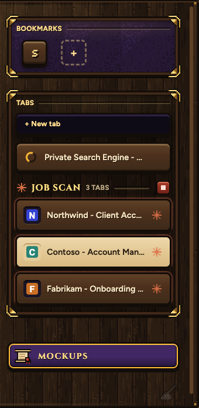
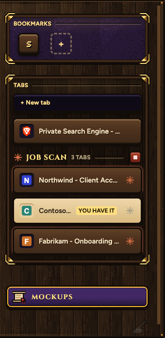
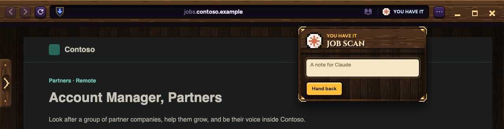
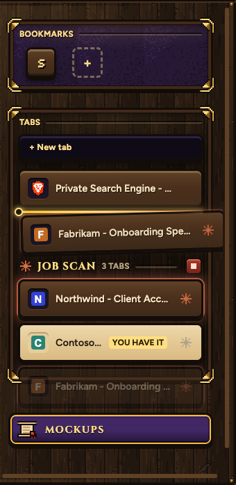
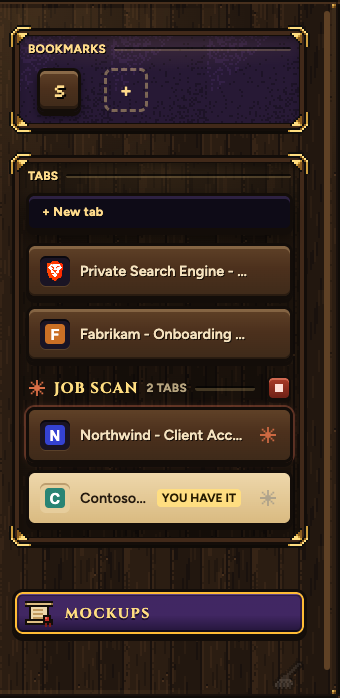

Every tab Claude works in is a normal tab you can click into and use. That covers a job scan Claude opened itself, a tab you asked about in the Claude app, and a tab you right-clicked Ask Claude on. Each one has the same Take over, Hand back and Ask Claude. These pictures are real Samara. The job and its sites are made up.
Claude's tabs sit in its group, with the spark and the orange glow while Claude drives them. Click one and you're in it, live, not a picture. The red key on the group stops all of them.


The same band as your own tabs: CLAUDE IS DRIVING, Take over, and STOP.

This tab is yours. Claude keeps going in the others. Write a note if you like, then Hand back, or just tell Claude in the chat.

Drag it into your tabs and it's yours: a normal tab that you can close, that sleeps, and that goes into a trail with tabs under it like any other. Claude stops using it and keeps the rest.


Claude reads this with its next step. A tab you have refuses Claude's clicks and typing until you hand it back.
Joshua took over tab 3 (Contoso - Account Manager, Partners). Leave it alone. Your other tabs keep going. You will be told when he hands it back.
Joshua handed back tab 3. Now on: Contoso - Account Manager, Partners. Fields he filled (names only): none. What he clicked: Apply now. He left no note.
Joshua took tab 4 (Fabrikam - Onboarding Specialist) for himself. It is not yours any more. Your other tabs keep going.
Joshua stopped the whole job. To start again, send a new plan.